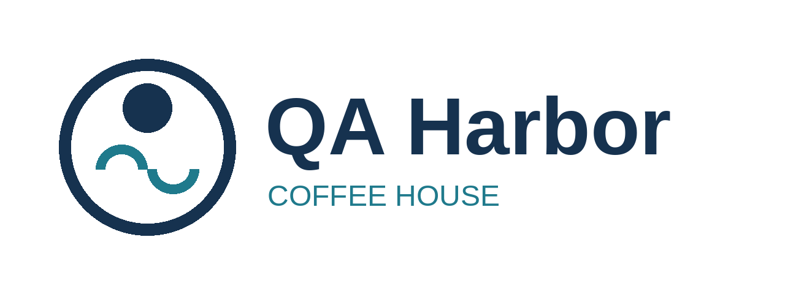

Locations
We have 15 cafes: 2 company-owned in Portland, Maine, and 13 franchised.
| State | Franchised Cafes |
|---|---|
| Maine | 6 |
| New Hampshire | 4 |
| Massachusetts | 3 |
This is a fictional test website. QA Harbor is not a real brand, and it offers no real franchises or products.

We have 15 cafes: 2 company-owned in Portland, Maine, and 13 franchised.
| State | Franchised Cafes |
|---|---|
| Maine | 6 |
| New Hampshire | 4 |
| Massachusetts | 3 |